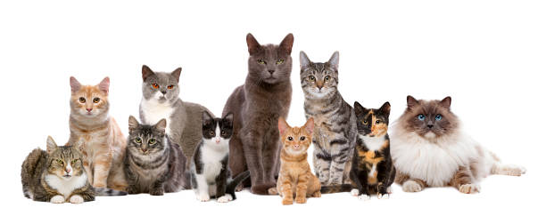
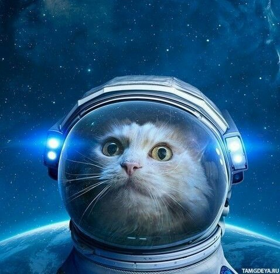

Pārsteidzoši fakti par kaķiem
Pret kaķiem cilvēki nav vienaudzīgi, daļai cilvēku tie izraisa antipātijas, bet daļa apbrīno to neatkarību un mieru. Apskatīsim interesantākos faktus par tiem:

- Kaķis nespēj sajust saldu garšu.
- Kaķis nevar nokāpt no koka ar galvu pa priekšu, jo nagi uz kaķa ķepas novietoti vienā virzienā. Lai tiktu lejā no koka, kaķim jāpārvietojas atmuguriski.
- Kaķi var izdvest aptuveni simt dažādu skaņu, kamēr suņi tikai desmit.
- Pasaulē dzīvo vairāk nekā 500 miljoni mājas kaķu un eksistē aptuveni 40 dažādu kaķu šķirņu.
- Senākais kaķu video uzņemts 1894. gadā, kurā redzami kaķi, kas boksējas.
- Kaķiem ir labāka atmiņa nekā suņiem.
- Pirmais kaķis, kurš aizlidoja kosmosā, bija Francijas kaķis Felicette jeb Astrokaķis, kuru Francija kosmosā aizsūtīja 1963. gadā. Kaķis no ceļojuma atgriezās dzīvs.

- Kaķim uz priekšķepām ir pieci pirksti, bet uz pakaļķepām – četri, ja vien kaķis nav polidaktils
- Kaķi ir pasaulē populārākie mājdzīvnieki. Uz katru pasaules suni ir gandrīz trīs kaķi.
- Saskaņā ar senu ebreju leģendu Noass lūdza Dievam palīdzību pasargāt no žurkām ēdienu, ko viņš glabāja šķirstā. Dievs lika lauvai nošķaudīties, un no šķaudiena radās kaķis.